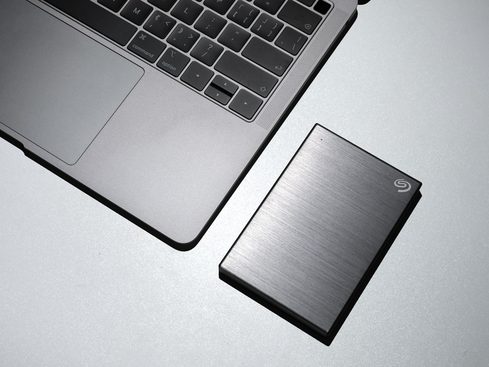

La cifra procede del comunicado publicado por Mastercard el 28 de octubre de 2026. Las entrevistas se realizaron entre el 31 de marzo y el 15 de abril. El resultado describe a las empresas encuestadas; no significa que se haya comprobado un incidente en el 37% de todas las pymes del país.
Según esa misma encuesta, el 98% de los participantes acepta pagos digitales y solo el 15% se siente muy preparado para proteger su negocio. Entre quienes reportaron un incidente, Mastercard menciona principalmente fraude en pagos y phishing: mensajes o páginas que imitan a una entidad conocida para obtener claves o inducir una transferencia.
Empiece por las cuentas que sostienen las ventas
Una tienda pequeña puede depender de un correo, una cuenta bancaria, WhatsApp, redes sociales y el administrador de su sitio. Si varias personas comparten una sola contraseña, resulta difícil saber quién hizo un cambio y retirar el acceso cuando alguien deja de trabajar con el negocio. Conviene dar a cada persona su propia cuenta, con permisos limitados a sus tareas, y revisar periódicamente los accesos.
Active la verificación en dos pasos en correo, banca, tienda y redes siempre que esté disponible. Es una segunda comprobación al iniciar sesión, además de la contraseña. La guía Cyber Essentials de CISA la incluye entre las primeras medidas para pequeñas empresas, junto con actualizaciones y respaldos.
Confirme cada cobro en el sistema que recibe el dinero
Para un comercio que entrega pedidos por mensajería, la captura enviada por un comprador no sustituye el movimiento en la cuenta o la confirmación del proveedor de pagos. Defina quién verifica el monto, la referencia y el estado del cobro antes de preparar o entregar el producto. Si el pago llega por tarjeta, revise el panel del proveedor y sus reglas para devoluciones y reclamos.
Esta rutina protege una operación distinta de la compra del consumidor. La guía sobre estafas bancarias y comprobantes SINPE falsos explica señales de fraude; aquí lo esencial es convertir la verificación en un paso fijo del negocio.

Prepare una copia que de verdad pueda recuperar
Un respaldo es una copia de archivos importantes que permite continuar si se pierde un equipo, se borra información o un programa malicioso bloquea el acceso. Priorice pedidos, facturas, catálogo, fotografías y datos necesarios para atender a clientes. Guarde una copia separada de los equipos de uso diario y pruebe que puede restaurar algunos archivos. CISA recomienda respaldos frecuentes y comprobar la recuperación; el MICITT también aconseja hacer copias periódicas.
Actualice el software del sitio, los celulares y las computadoras. Si un tercero mantiene la tienda, acuerde quién aplica las actualizaciones, quién conserva los respaldos y a quién se llama ante una falla. Una página web bien configurada reduce riesgos, pero ninguna instalación garantiza que no habrá incidentes.
Qué hacer si se detecta un incidente
- Detenga la operación afectada y avise de inmediato a la persona responsable del negocio y al proveedor técnico. Si hay movimientos bancarios sospechosos, contacte al banco por sus canales oficiales.
- Cambie las credenciales comprometidas desde un dispositivo confiable y cierre sesiones abiertas cuando el servicio lo permita.
- Conserve mensajes, registros de acceso, comprobantes y horas de los hechos. No borre evidencia antes de consultar con quien investigará el caso.
- Revise qué pedidos, pagos o datos podrían estar afectados y cómo mantener la atención a clientes mientras se recupera el servicio. Busque asesoría sobre las notificaciones que correspondan a su caso.
Un plan sencillo con responsables y teléfonos de contacto vale más que una lista extensa que nadie consulta. Si el negocio está evaluando una tienda, el servicio de tienda online de MiPaginaCR permite definir desde el inicio quién administrará accesos, respaldos y cobros según el proyecto.
Preguntas frecuentes
¿El 37% representa a todas las pymes costarricenses?
No. Es el porcentaje reportado en una encuesta a 200 propietarios y directivos. Mastercard informa un margen de error de ±6,9 puntos porcentuales y un nivel de confianza del 95% para los datos de Costa Rica.
¿Una tienda pequeña necesita verificación en dos pasos?
Sí conviene activarla en las cuentas que controlan ventas, pagos y datos. Reduce la posibilidad de acceso indebido cuando alguien consigue una contraseña, aunque no reemplaza la revisión de mensajes sospechosos.
¿Basta con que el proveedor de la web haga respaldos?
Conviene confirmar qué guarda, con qué frecuencia y cómo se recuperaría una copia. El negocio debe saber a quién contactar y probar la restauración de información importante.